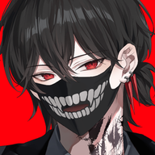

유진 방송 시작!
아래 버튼을 누르면 방송으로 가요.
치지직 앱으로 보기 웹으로 보기 팬보드로 가기관리자 테스트 — 어느 버튼이 치지직 앱의 방송 화면으로 바로 가는지 알려주세요.
1. 앱 지정 + chzzk.naver.com 2. 앱 지정 + m.chzzk.naver.com 3. 링크 그대로(https) 4. 치지직 앱만 실행(첫 화면)
아래 버튼을 누르면 방송으로 가요.
치지직 앱으로 보기 웹으로 보기 팬보드로 가기관리자 테스트 — 어느 버튼이 치지직 앱의 방송 화면으로 바로 가는지 알려주세요.
1. 앱 지정 + chzzk.naver.com 2. 앱 지정 + m.chzzk.naver.com 3. 링크 그대로(https) 4. 치지직 앱만 실행(첫 화면)